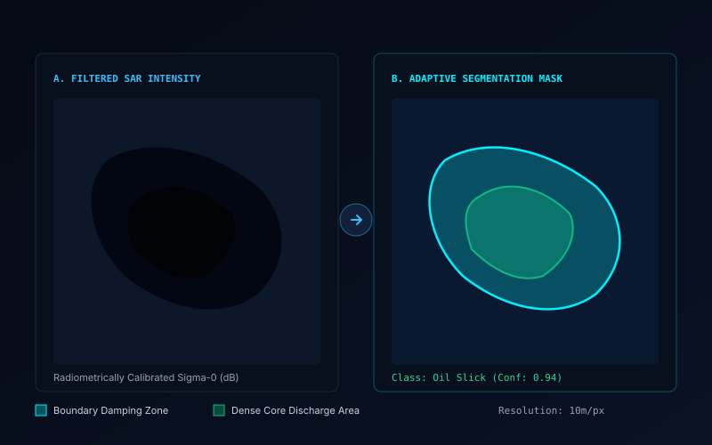

Research Figures & Demonstration Gallery
High-resolution scientific visual outputs, radar backscatter analysis, semantic segmentation masks, CFAR vessel target detections, and demonstration videos. Click any figure to open the fullscreen lightbox.
Automated Detection & Attribution Demo
Video walkthrough of the TRACEOIL pipeline running end-to-end: from satellite product ingestion and dark slick polygon extraction to backward drift modeling and historical AIS transponder intersection.

TRACEOIL Automated Processing Pipeline
Supports local MP4 playback (assets/videos/demo-pipeline.mp4) or YouTube embed via configuration in js/project-data.js.
Scientific Figures & Model Predictions
All research figures are rendered with vector accuracy and annotated with sensor metadata, polarizations, coordinate frames, and confidence levels.

Capillary Wave Damping
Synthetic Aperture Radar backscatter visualization contrasting wave-damped dark formations with rough open sea.

Dark Formation Masking
Side-by-side comparison of calibrated SAR intensity and semantic segmentation mask isolating the core discharge polygon.

CFAR Vessel Detection
Two-dimensional Cell-Averaging Constant False Alarm Rate detector extracting bright metallic ship reflections.

Reverse Drift Trajectory
Time-stamped backward Lagrangian drift vectors intersecting the historical AIS navigation path of a suspect tanker.

MetOcean Vector Fields
Quiver plot representing surface ocean current velocities (u, v) combined with 10-meter wind leeway forcing vectors.

System Architecture
Complete end-to-end data pipeline detailing satellite downlinks, preprocessing modules, and forensic report generation.
Experimental Benchmarking Outputs
Placeholder figure slots reserved for upcoming evaluation runs and model comparisons during SIH 2026 development.
Model Confusion Matrix
[Add model confusion matrix graphic here]
assets/figures/confusion-matrix.pngGeospatial GIS Map Output
[Add interactive GIS map export here]
assets/figures/gis-spill-map.pngAutomated PDF Forensic Dossier
[Add forensic legal dossier preview here]
assets/figures/forensic-report-sample.png